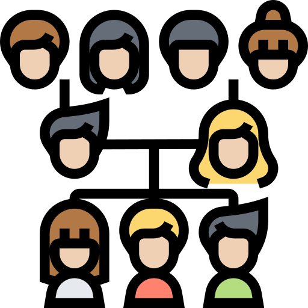
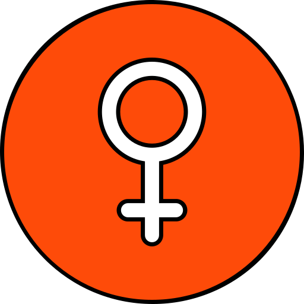
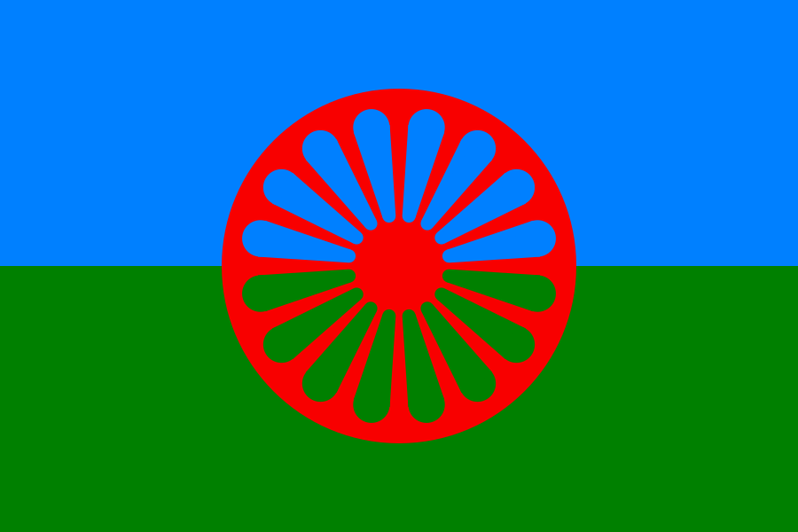
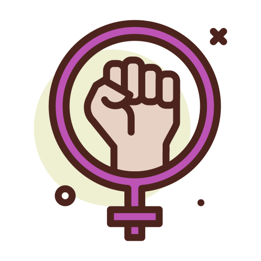
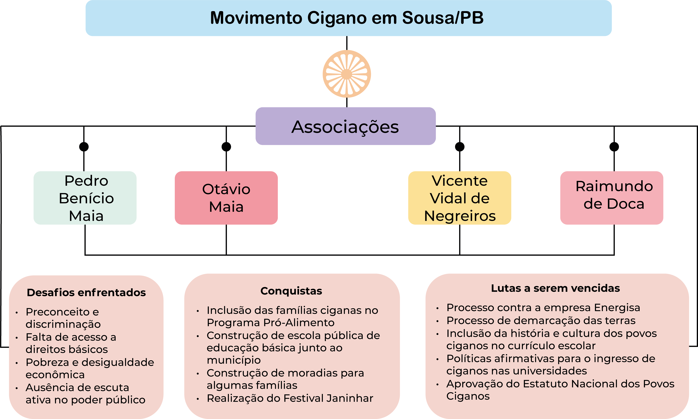
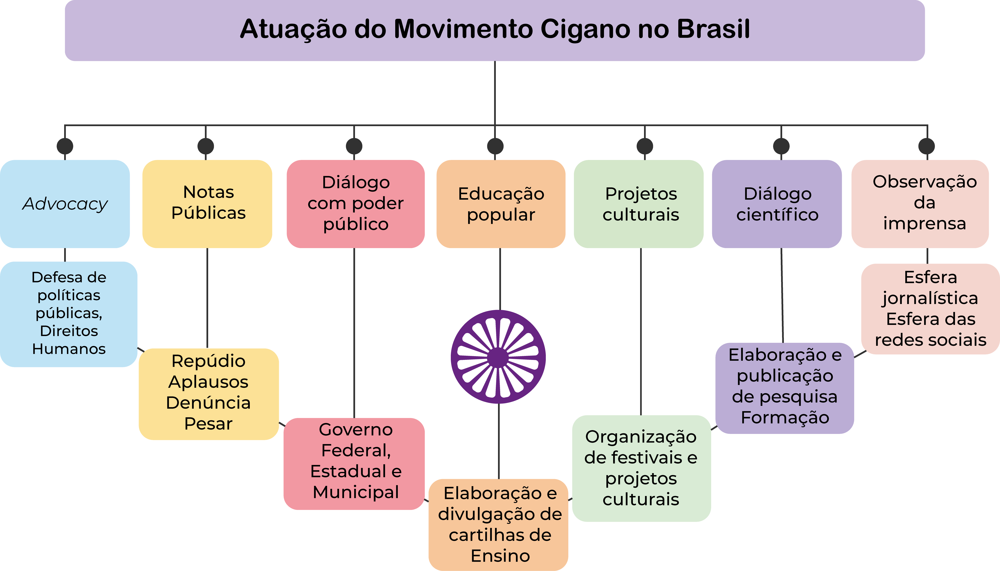
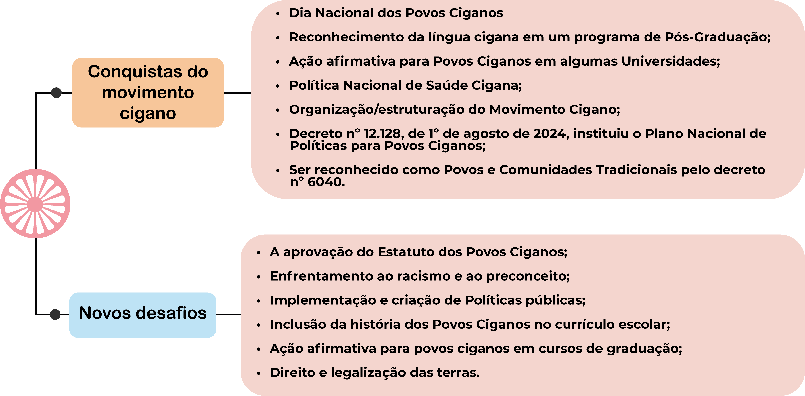
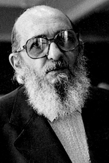

Organização social e política e participação de povos ciganos na construção de políticas públicas
Ao final desta aula, você será capaz de:
- Compreender a estrutura social e política cigana.
- Conhecer algumas associações e coletivos do movimento cigano do Brasil.
- Conhecer as principais conquistas e os desafios enfrentados pelo movimento cigano no território brasileiro.
- Compreender como a educação libertária pode formar novos representantes do movimento cigano, favorecendo um pensamento crítico e reflexivo sobre a diversidade em nosso país.
Introdução
A história da marginalização dos povos ciganos é longa e complexa, marcada por um entrelaçar de narrativas que se estendem por séculos. A chegada dos primeiros grupos ciganos à Europa remonta ao século XIV. Desde então, a trajetória dessas comunidades tem sido frequentemente ofuscada por estigmas e preconceitos. Assim como sombras que se desvanecem ao toque da luz, as vozes ciganas foram relegadas ao silêncio em meio ao barulho da história.
Nos séculos que se seguiram, a discriminação se intensificou. Com a ascensão de regimes autoritários e políticas de controle social, os ciganos foram vistos como forasteiros em suas próprias terras, tratados como "outros" em um mundo que se tornava cada vez mais insular. As perseguições que sofreram variaram em intensidade, desde medidas de isolamento e expulsão até genocídios. Na Europa, os ciganos foram muitas vezes incluídos em listas de "indesejáveis", vítimas de leis que não reconheciam sua humanidade, mas apenas a ameaça que sua presença representava para uma sociedade temerosa e xenofóbica. Esse tratamento racista foi transferido para o restante do mundo.
Essas experiências não são meras anedotas de um passado distante; elas ecoam nas interações sociais contemporâneas. A marginalização, além de se manifestar como um fenômeno estrutural, se infiltra na vida cotidiana das comunidades ciganas. O impacto de séculos de rejeição não se restringe a traumas individuais, mas se expande para a própria organização social de cada comunidade. As relações familiares e comunitárias, geralmente fortalecidas pela necessidade de sobrevivência e coesão em um mundo hostil, moldam a algumas das principais características e elementos culturais da identidade cigana, fazendo com que os laços se tornem uma rede de proteção e resistência.
Assim, os povos ciganos, no cenário internacional e nacional, se organizam social e politicamente para enfrentarem marginalização e perseguição, se colocando nas discussões políticas. Assim, os povos ciganos, no cenário internacional e nacional, têm se articulado social e politicamente para enfrentar processos históricos de marginalização e perseguição, buscando ocupar espaços de debate público. Ainda que setores da sociedade expressem atitudes e discursos anticiganos que dificultam a participação efetiva de ciganos em instâncias institucionais de formulação de políticas públicas, observa-se, em contrapartida, a resistência dos povos ciganos. Essa resistência se manifesta na reafirmação de suas identidades nas interações com não ciganos e na luta contínua por visibilidade, reconhecimento e representatividade.
Em cenários democráticos e com a emergência dos Direitos Humanos após a II Guerra Mundial, diante da necessidade de sobreviver em diálogo com a sociedade em um mundo globalizado, ativistas ciganos de vários países europeus começaram a se organizar politicamente. Tal movimentação tinha como objetivo alcançar a inclusão social e a cidadania plena (Silva Júnior, 2018). Marcos Toyansk (2012) pesquisou sobre o associativismo transnacional cigano. O objetivo de seu trabalho foi analisar o surgimento do movimento transnacional cigano e suas abordagens políticas na esfera internacional, destacando os dilemas acerca da integração e da autodeterminação. A análise revelou como foi moldado o chamado “movimento romani”, evidenciando que, embora os ciganos sejam uma minoria numerosa no contexto europeu, por exemplo, esse dado não os faz ser representados de maneira adequada nos espaços políticos dos países onde vivem.
Com relação ao contexto de ativismo no Brasil, Toyansk observou em 2012 que o movimento cigano estava circunscrito ao território nacional. Influenciado pelo ativismo na Europa, o precursor do movimento cigano, Mio Vacite, da União Cigana do Brasil, tratava do combate à discriminação, do acesso à saúde, educação, cidadania, contudo, até aquele momento, sem um efetivo envolvimento na esfera internacional. O ativismo cigano no Brasil, que surgiu de modo mais estruturado com Mio Vacite, cresceu e vem se modificando ao longo dos anos. Em sua tese, o Calon Aluízio de Azevedo (SILVA JÚNIOR, 2018), enquanto constatou que as violências físicas e simbólicas, aplicadas historicamente pelos Estados brasileiro e português contra as pessoas ciganas, impactam nas condições e situações de vida e saúde dessas comunidades, realizou um mapeamento do movimento político cigano no Brasil e em Portugal, criando canais de escuta aprofundada de vozes ciganas. Sua pesquisa fortalece a luta cigana e situa ciganos enquanto grupos transnacionais que produzem conhecimentos anticoloniais.
Uma escola inclusiva, que reconhece e respeita as especificidades culturais dos povos ciganos, constitui um espaço fundamental para a formação de lideranças e para o fortalecimento da representatividade cigana. Ao integrar ao currículo conteúdos sobre a história e a cultura ciganas, promove-se a valorização da identidade dos estudantes e amplia-se o conhecimento da comunidade escolar sobre a diversidade cultural.
Por meio de atividades que desenvolvem habilidades socioemocionais — como trabalho colaborativo, comunicação e resolução de conflitos — a escola favorece a preparação dos jovens para assumir papéis de liderança. Além disso, um ambiente que acolhe e celebra as diferenças contribui para o aumento da autoconfiança dos alunos ciganos, encorajando-os a defender sua cultura e a se posicionarem de maneira protagonista.
A participação ativa dos estudantes nas decisões escolares e a presença de referências ciganas em posições de liderança reforçam esse processo, oferecendo modelos inspiradores e acessíveis. Dessa forma, a educação atua como um fator estratégico na formação de lideranças que representem e promovam os interesses de suas comunidades.
Do mesmo modo, garantir a participação social e a inclusão dos povos ciganos e lideranças do movimento social cigano brasileiro nos espaços de gestão estratégica e participativa do SUS, como os conselhos e conferências de saúde, bem como suas pautas nas instâncias colegiadas do SUS, como CIB, CIT, CIRs, se faz fundamental para fortalecer este movimento social e a democratização da vida, dos direitos humanos e da saúde pública de qualidade.
Respeitar e promover os princípios da equidade e da integralidade no SUS, do mesmo modo, promove a participação social e a inclusão dos povos ciganos nos serviços do SUS de forma que leve em consideração suas especificidades e contextos culturais, sociais, econômicos, históricos.
Dito isto, o objetivo desta aula é auxiliar o/a estudante na compreensão sobre os modos de organização social e política de comunidades ciganas, incluindo a participação cidadã na elaboração e implementação de políticas públicas para povos ciganos no Brasil. Para tanto, discorreremos sobre o assunto conforme os tópicos a seguir:
- Estruturas familiares e comunais, destacando formas de liderança, representatividade e organização interna das comunidades ciganas.
- Papel da organização política e social na luta por direitos e reconhecimento, abordando a atuação do movimento social cigano em âmbitos internacional e nacional, com ênfase na resistência, no empoderamento e nas iniciativas de pessoas, comunidades e associações que constroem alternativas positivas frente às adversidades no Brasil.
- Eficácia da atuação do movimento cigano no Brasil e o papel da escola como espaço de formação de representatividade, por meio de práticas educativas libertárias que promovem direitos humanos e saúde pública, encerrando com as considerações finais.
Estruturas Familiares e Comunais, liderança e representatividade nas comunidades ciganas
Embora a dinâmica familiar varie entre os diferentes grupos ciganos, refletindo a diversidade de cada etnia, a valorização dos laços de parentesco (família extensa) é um traço comum e essencial. Nas comunidades ciganas, o conceito de família se estende muito além do núcleo familiar como estruturado na sociedade majoritária, envolvendo um tecido amplo de relações que inclui não apenas pais e irmãos, como também tios e tios avós, primos (de variados graus até o quinto, sexto), avós e bisavós. Nesse tecido relacional, cada um desempenha um papel significativo na/para constituição do outro e do nós. Esses laços não são apenas descrições de relações de parentesco; são verdadeiras âncoras que garantem a coesão social naquilo que o Calon Aluízio chama de Filosofia Kalon (Silva Júnior, 2018). As tradições e conhecimentos são compartilhados entre as gerações mediante narrativas orais; histórias contadas ao redor do fogo e ensinamentos informais que ocorrem no cotidiano. É nessa socialização de saberes que reside a força da identidade cigana, alicerçada tanto na oralidade como na prática vivida.

A formação familiar dentro dessas comunidades parece nos encaminhar para algumas considerações. A exclusão e o preconceito enfrentados pelos ciganos muitas vezes levam a uma maior coesão interna. Isso fomenta como a alteridade os constitui na relação entre as adversidades impostas pelos não ciganos e na celebração da identidade. Por outro lado, a relação com o espaço público e a interação com a sociedade não cigana, no entanto, permanecem complexas. Há uma luta constante para validar sua presença e cultura em um ambiente que tende a marginalizar a riqueza da diversidade entre os povos ciganos.
As lideranças familiares desempenham papéis fundamentais nas comunidades ciganas. Os líderes comunitários não são apenas figuras de prestígio, mas sim pilares que sustentam a estrutura social, responsáveis por articular e defender as demandas coletivas, promovendo os direitos e a dignidade dos seus.
Líderes ciganos se destacam nesse papel por seu compromisso e paixão. Relatos como o do Calon Francisco Lacerda (mais conhecido como Bozano), um conhecido líder em sua comunidade e no movimento social cigano brasileiro (Sousa – Paraíba), ilustram a importância dessa função. As palavras a seguir evidenciam como começou sua jornada nessa posição:
“Meu pai sempre falava que a organização é a chave. Aprendi a unir as pessoas, a fazer com que elas se sintam vistas e ouvidas. Nós somos mais fortes juntos, e isso é uma verdade que levo no meu coração.”
Assim, as palavras de Bozano, que é presidente da Associação Cigana Otavo Maia, reverberam a essência da liderança cigana, em que a força coletivista é mais poderosa do que a individualidade.
A diversidade das comunidades é outra camada interessante a ser observada nos desdobramentos na atividade de liderar. Resistências não se expressam de forma única; elas encontram voz singular em diferentes líderes, cada um trazendo suas próprias visões e narrativas entrelaçadas com a socialização experimentada em cada comunidade cigana. A complexidade dessa diversidade, observável nas interações sociais e nas decisões que moldam o futuro das comunidades, destaca a necessidade de que diversas vozes sejam ouvidas. Cada líder, cada figura proeminente, representa um segmento da experiência cigana e suas contribuições tornam-se cruciais para a construção de um futuro mais coeso.
Um dos maiores desafios enfrentados pelos ciganos e pelas ciganas que são lideranças comunitárias é garantir a representatividade em espaços políticos e de decisão. Nesses espaços, de modo geral, suas vozes encontram dificuldades para serem consideradas e incorporadas de forma efetiva. As barreiras sociais, econômicas e culturais, estruturadas pelo anticiganismo, criam um abismo difícil de transpor. Por isso, a luta pela inclusão de representantes ciganos em instâncias governamentais e em discussões sobre políticas públicas é imprescindível. Isso não diz respeito apenas a um ideal; é uma necessidade urgente para garantir que as aspirações e desafios vividos pelas comunidades sejam refletidos nas ações de formulação e implementação das políticas públicas. Histórias de sucesso que têm surgido através desse ativismo são verdadeiros testemunhos de resiliência. Vemos exemplos de pessoas ciganas que passaram a dedicar suas vidas ao ativismo social e à militância política, lutando por reconhecimento e direitos humanos, sociais, econômicos, culturais e políticos, não apenas para si, mas para toda a comunidade e os povos ciganos de uma forma geral.

Ademais, a presença de mulheres ciganas em posições de liderança tem se mostrado vital na construção dessas representações. Cada vez mais elas estão ocupando lugares de destaque, não apenas como vozes que clamam por direitos, mas como sujeitos de voz ativa no meio da luta pela elaboração, implementação e efetivação de políticas públicas para povos ciganos. Historicamente relegado a um segundo plano na sociedade majoritária e sociedades ocidentais, cujos reflexos do machismo chegam também internamente dentro das comunidades, especialmente, num passado mais remoto, os papéis femininos nas comunidades ciganas e em seu movimento social está emergindo com força, refletindo uma nova era de liderança e participação dentro das comunidades.
Após essa breve explanação sobre como se organiza e é instituída a liderança, assim como sua importância para uma comunidade cigana e de sua representação nos espaços políticos, no próximo tópico, discorreremos sobre o movimento cigano e alguns desdobramentos no Brasil.
O movimento cigano: o papel da organização política e social na luta por direitos e reconhecimento
Os desafios enfrentados pelos povos ciganos são complexos e multifacetados, enraizados em uma história de marginalização que se estende por gerações. Ao lado das forças sociais de marginalização, se coloca as forças sociais de resistência. De acordo com Toyansk (2012), as primeiras organizações ciganas de base a demandar direitos civis surgiram nos anos 30 na Europa Oriental, em países como Romênia e Iugoslávia. Antes de explanarmos como se constitui e como está avançando o movimento cigano no Brasil, discorreremos sobre o movimento cigano internacional, apresentando alguns marcos importantes.
Em 1971, Vanko Rouda e o Comitê Internacional Cigano (CIT) realizaram o Primeiro Congresso Mundial Romani, lançando, assim, as bases do movimento com importância simbólica. O objetivo desse Congresso foi unir os Roma e encorajá-los a agir, discutir sobre sua emancipação conforme as suas ideias. Nesse evento, foram estabelecidas comissões para educação, cultura e identidade, assim como sobre a memória do genocídio sofrido pelos ciganos durante o Holocausto praticado pelo regime nazista durante a Segunda Guerra Mundial.
Dando continuidade ao Comitê Internacional Cigano (CIT), a União Romani Internacional (URI) foi formalmente constituída em 1978, durante o Segundo Congresso Romani, visando representar os ciganos na esfera internacional. A importância dessa organização se dá pelo fato de que foi a primeira que discutiu o conceito de nação romani, apresentando a bandeira romani, o hino Djelem, Djelem, o slogan Opré Roma! – Roma, erguei-vos! – e o termo “roma” para todos os ciganos. Tais símbolos fortaleceram a mobilização política. (Kliomvá-Alexander, 2005) O primeiro congresso da URI foi organizado com o apoio de acadêmicos civis ativos e interessados na cultura e na história roma (Toyansk, 2012).

A bandeira romani é composta por duas faixas horizontais: a superior, em azul, simboliza o céu, enquanto a inferior, em verde, representa a terra. No centro, destaca-se um chakra vermelho — uma roda de 16 raios — que remete à origem indo-ariana do povo rom e à tradição nômade que marca sua história e identidade cultural.
Vamos prosseguir com a apresentação do movimento cigano do Brasil; das associações e coletivos do Brasil; e como essa movimentação está crescendo e revelando outras nuances na/para a luta cigana.
Em primeiro lugar, citamos a União Cigana do Brasil (UCB), que é uma entidade reconhecida como representante da cultura cigana no Brasil pela Internacional Roma Federation (INC), filiada à Organização das Nações Unidas (ONU). Essa entidade representativa foi fundada por Mio Vacite em 1990 e, desde então, tem lutado para garantir o desenvolvimento sustentável das famílias ciganas, consoante as particularidades históricas e atuais, assegurando os direitos à titulação e à permanência na terra, bem como à documentação básica, alimentação, saúde, esporte, lazer, moradia adequada, trabalho, serviços de infraestrutura e previdência social, além de políticas públicas voltadas para a população brasileira.
Conheça a União Cigana do Brasil – UCB. A UCB é uma entidade reconhecida como representante da cultura cigana no Brasil pela Internacional Roma Federation, INC que é filiada à ONU - Organização das Nações Unidas.
A referência a Mio Vacite, filho de pais iugoslavos que emigraram para o Brasil, é de suma importância ao apresentarmos o início da organização de associações ciganas no Brasil. A inserção de Mio Vacite no movimento cigano é anterior à criação da UCB. Seus primeiros passos de ativista se deram no Centro de Estudos Ciganos (CEC), espaço onde Vacite atuou como presidente de 1987 até 1989. Em seguida, o músico e violinista se dedicou à criação da União Cigana do Brasil em virtude da elaboração de um projeto político diferente da proposta pelo CEC.
No decorrer da história, outras associações foram criadas. Ainda que com concepções políticas diferentes, o objetivo central do movimento cigano do Brasil é a luta por políticas de acesso à saúde, à educação básica e superior, à moradia, à participação dos povos ciganos na formulação e implementação de leis que valorizem a cultura. Atualmente, observamos nuances na própria emergência, constituição e configuração das associações ao longo do tempo. Além disso, com a criação das Novas Tecnologias da Informação e Comunicação (TIDIC’s), percebemos como elas se integram, ampliando os espaços do dizer, incluindo uma força jovem e diversa no hall da luta cigana. Nessa rede discursiva, situa-se o Coletivo Ciganagens.
O Coletivo Ciganagens surgiu em 2020, durante a pandemia da COVID-19, em que as relações orgânicas presenciais estavam prejudicadas. De modo a estreitar divisas, o grupo de ativistas criou uma rede de apoio mútuo, com informação, arte, direito e educação. Desde a emergência, o grupo vem atuando em prol dos direitos dos Povos Ciganos no Brasil, por meio da promoção de ações e de narrativas de pessoas ciganas pautadas pelo ativismo anticolonial, antirracista e antissexista, bem como pela via da integração LGBTQIAPN+.
O Ciganagens é formado por ciganes de diversas áreas profissionais, como Jornalismo, Artes, Direito e Pedagogia. Atualmente, conta com sete integrantes em seus respectivos Estados:
- Bahia
- Goiás
- Paraíba
- Mato Grosso
- Paraná
- Rio de Janeiro
Para ampliação e circulação de vozes, o coletivo tem um perfil ativo no Instagram, assim como um site com informações detalhadas sobre atuação no cenário político. Há que ressaltar que esse movimento elabora e compartilha gratuitamente materiais didáticos sobre povos ciganos do Brasil.
Para conhecer mais sobre o coletivo acesse o perfil do Instagram @ciganagens.
A Associação Estadual de Etnias Ciganas (AEEC-MT), fundada em 2017 pela reunião das comunidades ciganas mato-grossenses de três municípios (Cuiabá, Rondonópolis e Tangará da Serra). Desde a fundação, objetiva representar e defender os direitos humanos dos povos ciganos em Mato Grosso e no Brasil; desde então, tem se dedicado ao ativismo e ao desenvolvimento de ações sociais, políticas, culturais e comunicacionais. Em 2020, integrou-se ao Comitê Estadual dos Povos e Comunidades Tradicionais de Mato Grosso (CEPCT-MT), vinculado à Secretaria de Estado de Ação Social, Trabalho e Cidadania de MT (SETASC/MT). Em 2021, passou a integrar o Conselho Nacional de Promoção de Políticas de Igualdade Racial (CNPIR), vinculado ao atual Ministério da Igualdade Racial (MIR).
O ativismo da AEEC-MT dedicado às questões culturais dos povos ciganos também ganha destaque. Em 2021, a associação teve aprovação no Edital Conexão Mestres da Cultura, da Lei Aldir Blanc da Secretaria de Estado de Cultura, Esportes e Lazer de Mato Grosso (SECEL-MT). Tal feito resultou na premiação da raizeira e benzedeira Maria Divina Cabral, a diva, como mestra da cultura mato-grossense. Nos desdobramentos desse projeto, foi realizado o “I Encontro de Mulheres Ciganas de Mato Grosso” (abril de 2021), com a participação de 15 mulheres ciganas e a mestra Diva e a Exposição Multimídia Calin, que retratou 31 mulheres ciganas dos municípios de Rondonópolis, Tangará da Serra e Cuiabá.
Para conhecer mais sobre a Associação Estadual das Etnias Ciganas acesse o perfil do Instagram @aeecmt.

Considerando as mulheres ciganas no crescimento do movimento cigano no Brasil, é importante destacar o Coletivo das Mulheres Ciganas do Brasil (COMCIB). Criado em 2011 e fortalecido durante a pandemia mencionada, o COMCIB surgiu do anseio de conectar mulheres ciganas de todo o mundo para uma nova rede de diálogo, informação, apoio e afeto. Esse coletivo tem lutado para incluir as questões de gênero nos debates dentro e fora das comunidades. Por meio de eventos culturais e atividades educativas, esse grupo preserva e divulga tradições ciganas. O Coletivo Mulheres Ciganas do Brasil é importante para o empoderamento e a valorização das mulheres da etnia cigana.
Entre as atuações do COMCIB, citamos a defesa dos direitos humanos, abordando questões como violência de gênero e discriminação.
Essas iniciativas não só fortalecem as mulheres em suas comunidades, mas também promovem uma sociedade mais justa e inclusiva, onde todas as vozes são ouvidas e respeitadas.
Participaram efetivamente da luta cigana, construindo com outras mulheres ciganas o “Guia de Saúde Sexual e Reprodutiva de Mulheres Ciganas” no âmbito do curso “Juventude Cigana”, em parceria com o Coletivo Ciganagens. O grupo também participou de audiência pública do Estatuto dos Povos Ciganos, na Câmara dos Deputados, e da roda de conversa de políticas públicas para povos ciganos no Brasil, promovida pelo Ministério da Igualdade Social (MIR). Em 2024, em parceria com a APRECI e a Confederação Brasileira Cigana, o coletivo conquistou um edital exclusivo para os povos ciganos junto ao Centro Universitário Internacional (UNINTER). Essa articulação resultou em 20 bolsas de estudo gratuitas, sendo 10 para cursos de graduação e 10 destinadas à Educação de Jovens e Adultos (EJA). Além disso, o coletivo marcou presença no lançamento do Plano Nacional de Políticas Públicas para Povos Ciganos, promovido pelo MIR.
Já o Coletivo Cigano Juntos Somos Mais Fortes foi fundado em 2023 por Wanderley da Rocha, visando unir e fortalecer a comunidade cigana no Brasil. Composto por mais de 30 associações, coletivos e famílias ciganas, esse grupo objetiva promover a valorização da cultura, a defesa de direitos e a inclusão social dos ciganos. Ao longo de sua trajetória, esse coletivo tem buscado espaços de visibilidade e diálogo com diferentes setores governamentais, participando de reuniões junto ao Governo Federal para criação e implementação de políticas públicas para os Povos Ciganos.
Através de parcerias e ações comunitárias, o "Juntos Somos Mais Fortes" busca garantir que as vozes ciganas sejam ouvidas e respeitadas, promovendo espaços de escuta para que as tradições, a história e as lutas da comunidade sejam reconhecidas. Algumas das atuações desse coletivo podem ser observadas na cobrança por informações sobre o andamento da formação do Comitê de Saúde dos Povos Ciganos.
No desenvolvimento do movimento cigano no Brasil há associações que se formam na maior comunidade cigana da América Latina, situada em Sousa, interior da Paraíba (PB).
No referido município, há presença cigana Calon desde o final dos anos 70 do século XX. No contexto atual, destacam-se:
- Associação Pedro Benício Maia, liderada por Francisco Lacerda de Figueiredo.
- Associação Vicente Vidal de Negreiros, representada por Francisco Alfredo Maia.
- Associação Otávio Maia, cuja liderança é de Cícero Romão.
- Associação Pedro Bernadone Cabral, liderada por Francisco Vidal Pereira.
Os ciganos Calon de Sousa/PB vivenciam situações de racismo/anticiganismo. Essa marginalização é ainda mais pronunciada em ambientes onde a falta de representação e reconhecimento de seus direitos gera um ciclo de pobreza e exclusão social. Histórias pessoais dos líderes comunitários dessas associações ressaltam essa realidade: "Muitas vezes somos vistos como estranhos em nossas próprias casas. O que queremos é ser ouvidos, não apenas tolerados", compartilhou Calon Maninho (líder Cícero Romão da comunidade Otávio Maia em Sousa/PB). O núcleo desses desafios reside na falta de reconhecimento da diversidade interna entre os diferentes grupos ciganos, o que reforça estigmas e dificulta o acesso a direitos básicos. A seguir, o esquema apresenta alguns dos principais desafios vivenciados, bem como as lutas e conquistas alcançadas graças à resistência e à mobilização do movimento cigano.

Nesse contexto, as lideranças das associações ciganas de Sousa/PB têm apresentado diferentes demandas relacionadas às condições de vida, ao acesso a direitos e à melhoria das condições de permanência das famílias nas comunidades. Os líderes das associações ciganas de Sousa/PB estão lutando pela legalização das terras onde as famílias ciganas estão fixadas. Buscam, por meio da Justiça, a revisão dos valores cobrados pela empresa responsável pelo fornecimento de energia, considerados elevados pelas comunidades. Além disso, relatam dificuldades relacionadas ao modelo de medidor único adotado em âmbito nacional, que, segundo eles, pode dificultar a verificação do consumo e dos valores cobrados. Inclusive, a liderança comunitária busca auxílio, por meio de cestas básicas, para as famílias em insegurança alimentar, conseguindo, com isso, cadastrar famílias no Programa Pró-Alimento junto ao Governo do Estado da Paraíba.
Ao longo da história da diáspora, os povos ciganos desenvolveram formas próprias de resistência. Em síntese, para esta aula, ilustramos a seguir pelo menos sete frentes de atuação do movimento cigano do Brasil:

No desdobramento dessa atuação, destacamos algumas conquistas do movimento cigano do Brasil, assim como os novos desafios. Vejamos a ilustração a seguir:

Os movimentos de resistência das associações e dos coletivos ciganos do Brasil têm resultado em avanços significativos. É evidente que ainda são poucas as políticas públicas nos diversos setores públicos. Na esfera da saúde, por exemplo, a Política Nacional de Atenção Integral à Saúde do Povo Cigano/Romani, criada em 2018, pela Portaria n.º 4.384, Portaria MS n.º 940, de 28 de abril de 2011, Portaria n.º 2.446, de 11 de novembro de 2014, assim como o Projeto de Lei n.º 1387/2022, denominado Estatuto dos Povos Ciganos. Esses fatos nos levam a reconhecer a necessidade urgente de uma agenda mais robusta de políticas públicas que considere as especificidades da população cigana. É fundamental haver um diálogo contínuo entre associações, coletivos e poder público para que as necessidades das comunidades sejam efetivamente atendidas.
A mobilização das associações coletivas ciganas é vital não apenas para conquistar políticas públicas mais abrangentes, mas também para a implementação das já existentes, para que os povos ciganos possam usufruir plenamente de seus direitos como cidadãos.
Ao longo desse tópico, apresentamos dados de como o movimento cigano tem se organizado no Brasil. Em aulas anteriores, foi comentado que os povos ciganos do Brasil constituem uma diversidade. Não há uma única cultura cigana, mas culturas ciganas. Assim sendo, não existe uma única narrativa, mas uma tapeçaria rica de histórias e culturas, tornando ainda mais vital que as políticas sejam formuladas com a participação ativa desses grupos. Na prática, isso significa que, ao desenvolver políticas públicas, não se deve assumir que uma solução única se aplicará a todas as realidades.
No próximo tópico, discorreremos mais detalhadamente sobre a eficácia da luta erguida pelo movimento cigano do Brasil.
A eficácia da atuação do movimento cigano no Brasil: marcos legais e outras conquistas
Historicamente, as políticas que visam à inclusão dos povos ciganos têm variado entre países e regiões, refletindo um panorama diversificado de abordagens e resultados. Por exemplo, na Europa, diversas nações estabeleceram políticas específicas para a integração dos ciganos, muitas vezes focando na Educação e na Saúde. No entanto, a realidade vivida por essas comunidades ainda evidencia desigualdades persistentes e desafios significativos. A legislação tem sido uma ferramenta essencial, mas a sua aplicação prática muitas vezes falha em alcançar os resultados desejados. Muitas iniciativas não chegam a ser efetivas devido à falta de abertura para o devido envolvimento das próprias comunidades ciganas na concepção e implementação dessas políticas.
No Brasil, o movimento cigano apresenta crescimento e organização. Fruto desse ativismo, são os marcos legais e as políticas de ações afirmativas instituídas nos últimos 18 anos. O I Encontro Nacional dos Povos Ciganos (Brasil Cigano), realizado de 20 a 24 de maio de 2013, pode ser um exemplo dessa atividade. Esse evento reuniu cerca de 300 pessoas de comunidades ciganas de diversas regiões do país e proporcionou um espaço político de discussão entre entidades e comunidades ciganas e destas com instituições do poder público federal e do Distrito Federal.
As entidades que se envolveram na organização foram as seguintes:
- AMSK/Brasil – Associação Internacional Maylê Sara Kalí AICROM - Brasil/GO
- Associação Internacional da Cultura Romani ANEC/GO
- Associação Nacional das Etnias Ciganas APRECI/PR
- Associação de Preservação da Cultura Cigana CEDRO/SP
- Centro de Estudos e Discussão Romani Grupo Leshjae Kumpanja/AL
Conheça os marcos legais conquistados pelo movimento cigano do Brasil, a seguir:
2006
Institui o Dia Nacional do Cigano, dia 24 de maio.
2007
Institui a Política Nacional de Desenvolvimento Sustentável dos Povos e Comunidades Tradicionais.
2009
Dispõe sobre os direitos e deveres dos usuários da saúde, e que afirma, no parágrafo único, do Art. 4º, o princípio da não discriminação na rede de serviços de saúde.
2011
Regulamenta o sistema do Cartão Nacional de Saúde, e que afirma a não obrigatoriedade do fornecimento do endereço de domicílio permanente no caso de população cigana nômade que queira se cadastrar.
2011
Definem Diretrizes do Conselho Nacional de Educação para o Atendimento em Educação Escolar para a População em Situação de Itinerância.
2012/ 2013
Inclusão no Cadastro Único para Programas Sociais do Governo Federal (CadÚnico), de marcador específico para a identificação de famílias ciganas.
2024
Instituiu o Plano Nacional de Políticas para Povos Ciganos no Brasil. O plano prevê a realização de um concurso público, o Prêmio, que reconhece iniciativas culturais de povos ciganos.
Marcos legais conquistados pela atuação do movimento cigano no Brasil
Fonte: A autora (2024)
Como visto no esquema, apesar da contribuição social, cultural e histórica dos ciganos, apenas em 2006 foi instituído, via decreto presidencial, o Dia Nacional dos Povos Ciganos (24/5). Vale salientar que uma das maiores conquistas do movimento cigano é a sua própria organização, por meio da criação de várias associações e coletivos na extensão do território brasileiro.
Essas conquistas se desdobram em ações e políticas públicas para os povos ciganos em esferas da sociedade, como, por exemplo, na Saúde e na Educação. Contudo, apesar desses avanços, as abordagens inovadoras para a formulação de políticas públicas voltadas para os povos ciganos precisam ser analisadas à luz da urgência em garantir que suas vozes sejam ouvidas e respeitadas. A inclusão desses grupos não deve ser tratada como uma mera formalidade, mas sim como um compromisso genuíno com suas realidades e particularidades.
Uma estratégia crucial é a adoção de métodos participativos, em que os próprios ciganos desempenhem um papel ativo na criação e implementação das políticas que os afetam diretamente. Ao garantir que suas contribuições e experiências sejam consideradas, as políticas públicas tendem a ser mais efetivas e representativas. Iniciativas como fóruns de discussão, workshops educativos e espaços de diálogo intercomunitário são passos preciosos para a construção de pontes.
É através do entendimento e do reconhecimento de suas culturas que podemos formar uma sociedade verdadeiramente inclusiva. Assim, os ciganos não serão apenas vistos como "outros", mas como partes integrantes de uma tapeçaria cultural rica e vibrante que todos compartilhamos. As políticas públicas destinadas aos povos ciganos precisam ser abordadas de forma crítica, envolvendo uma análise minuciosa de sua eficácia, abrangência e impacto nas comunidades. Essa avaliação inicia-se com uma exploração das legislações e programas que foram implementados ao longo dos anos.
O movimento cigano tem desempenhado um papel crucial na luta por políticas afirmativas que garantam não apenas a entrada, mas também a permanência de jovens ciganos nas universidades. Essas iniciativas buscam reconhecer as barreiras enfrentadas por esses estudantes, como a discriminação e a falta de apoio institucional, que resultam muitas vezes em altas taxas de evasão. Como exemplo trazemos a experiência da Calin Milene Soares, residente no Município de Sousa/PB, que conseguiu aprovação por meio de políticas afirmativas no curso de Medicina da Universidade Estadual da Bahia (UNEB), no entanto, após a realização da matrícula, não pode dar continuidade ao tão sonhado curso por falta de meios para permanência. Fica evidente que, além de garantir o acesso ao ensino superior, é fundamental que essas políticas ofereçam condições adequadas de permanência, como bolsas de estudo, assistência social e espaços de diálogo, visando a formação plena e a valorização da identidade cigana no ambiente acadêmico.
As políticas públicas que visam a inclusão dos povos ciganos frequentemente revelam lacunas e desafios que perpassam a própria elaboração e implementação dessas diretrizes. O afastamento entre as intenções expressas em legislações e a verdadeira realidade enfrentada pelas comunidades ciganas se tornam evidentes ao examinarmos diferentes áreas, como Educação, Saúde e Habitação. Em síntese, há marcos legais, porém a implementação não ocorre de forma efetiva. Esse é um ponto crucial e a partir dele mapeamos um cenário no qual as expectativas são frustradas, resultando em desconfiança e descontentamento.
Um dos principais aspectos a serem discutidos refere-se à ausência de uma participação efetiva dos representantes ciganos na formulação de políticas que os afetam diretamente. Em diversos casos, programas são elaborados sem o devido envolvimento das comunidades ciganas, causando um desalinhamento entre as ações do poder público e as necessidades reais dos povos. Bozano, um líder comunitário cigano, compartilhou sua frustração: “Sabemos que há bons programas no papel, mas eles muitas vezes não refletem o que realmente vivemos. Precisamos fazer parte da conversa.”
Além disso, a desconexão entre a vida cotidiana das comunidades e as políticas públicas são um fator que contribui para a perpetuação das desigualdades. Apesar de existirem iniciativas destinadas a facilitar o acesso à Educação, muitos jovens ciganos ainda encontram obstáculos significativos para se inserir nas escolas. Fatores como a discriminação em ambientes escolares, a falta de recursos adequados e a mobilidade social restrita frequentemente interferem na educação formal. Ana, uma jovem estudante cigana, relatou: “Sinto que estamos sempre lutando contra um sistema que parece não reconhecer nossas necessidades. A escola deveria ser um lugar seguro para nós, mas muitas vezes é tudo menos isso.” Histórias de resistência também surgem nesse contexto.
Organizações não governamentais e ativistas ciganos têm utilizado o empoderamento comunitário como uma forma de driblar os entraves impostos pela falta de políticas adequadas. Projetos de formação e capacitação voltados para jovens têm demonstrado resultados positivos em várias localidades. Um exemplo notável é o curso “Juventude Cigana”, que fomentou a formação política e a conscientização social entre jovens ciganos. Suenya, uma das participantes, disse: “Aprendemos a nos posicionar e a reivindicar nossos direitos. Essa é uma forma de superação que vai além da educação; é uma luta pelo nosso lugar na sociedade.”
Por falar em formação, no próximo tópico, discorreremos sobre como a escola pode ser uma agência que favorece uma formação crítica e reflexiva para futuros ativistas ciganos.
A escola como espaço para exercer e formar a representatividade e a cidadania por meio de uma educação libertária

Paulo Freire, um dos maiores educadores brasileiros, desenvolveu uma perspectiva educacional focada na emancipação do indivíduo, conhecida como "educação libertadora". Ele acreditava que a Educação deveria ser um meio de conscientização, através do qual os oprimidos pudessem tomar consciência de sua realidade e, a partir disso, transformar sua condição. Essa pedagogia libertadora envolve o desenvolvimento da "consciência crítica" (ou conscientização), onde os alunos, a partir de suas experiências de vida, aprendem a analisar e questionar as estruturas sociais e políticas que os cercam. Esse processo visa à transformação da sociedade e à construção de um ambiente mais justo e democrático. Assim, a transformação social almejada pelos Povos Ciganos deve começar dentro da própria comunidade, esse processo de emancipação, é necessário que os próprios ciganos liderem iniciativas em áreas como educação, saúde e direitos civis, com apoio de políticas públicas que respeitem sua autonomia e diversidade.
A exclusão social enfrentada por comunidades ciganas é sentida em diversos níveis. Por trás de cada número estatístico, existe uma história de frustração e luta. As barreiras no acesso a serviços básicos, como Saúde e Educação, são apenas o reflexo de um padrão histórico de exclusão que foi cuidadosamente repetido ao longo dos séculos. O direito à vida digna é sistematicamente invisibilizado e a sociedade majoritária, de modo geral, acredita que a virulência do preconceito pode ser justificada por mitos e estigmas (conforme exposto na aula “Preconceito, discriminação e estigma” deste curso).
A Educação, enquanto pilar fundamental da cidadania, desponta como uma poderosa ferramenta de empoderamento para os povos ciganos. É na escola, esse espaço considerado cheio de lacunas, mas essencial, que se inicia um processo vital de transformação. A relação íntima entre o acesso à Educação e à autonomia das comunidades ciganas é inegável.
“Conhecimento é poder e, quando este se torna acessível, as portas para um futuro digno se abrem. Educação é mais que aprender a ler e escrever; é entender que podemos mudar nossa história”, declarou Marcilânia, uma jovem pedagoga cigana que teve seu destino transformado através do conhecimento.
Marcilânia Alcântara
Há uma percepção errônea, quando se trata sobre a evasão escolar cigana. De modo geral, com base em uma visão deturpada, enraizada nos estigmas e estereótipos, não-ciganos podem afirmar que os ciganos não gostam de estudar. De acordo com Alcântara (2024), a partir de suas vivências, essa ausência de motivação para participar da escola, parece se dar pelos seguintes fatos:
É preciso que a escola esteja preparada para lidar com as diversidades; sair de um trabalho que contempla essa heterogeneidade étnica apenas em datas específicas para um diálogo cotidiano. É no chão da escola que a sociedade pode ser transformada. Dito isto, é preciso que a escola, além da matrícula escolar garantida pelo Parecer CNE/CEB n.° 14/2011 e pela Resolução CNE/CEB n.º 3, de 16 de maio de 2012, ofereça, também, meios de permanência para crianças, jovens e adultos ciganos.
Diante de um cenário frequentemente adverso, a resistência dos jovens ciganos se torna um símbolo poderoso de luta e esperança. Citamos, como exemplo, a aplicação do projeto “As diversas cores da minha cultura: a história dos povos ciganos através de contos”, realizado pela pedagoga Calin Marcilânia Alcântara, na Escola Municipal Irmã Maria Iraides Holanda Lavor. Essa instituição de Educação básica atende crianças e jovens das comunidades ciganas de Sousa/PB. As atividades desse projeto são desenvolvidas com a participação de estudantes ciganos e não-ciganos e contam com apresentações culturais que envolvem a dança e a música cigana, contação de histórias que refletem suas experiências e tradições. “Se não celebrarmos nosso legado, quem o fará por nós?” (Marcilânia Alcântara), afirma a professora cigana idealizadora dessa iniciativa.
Assista ao vídeo Projeto "As diversas cores da minha cultura: a história dos povos ciganos através dos contos " e veja a importância da inclusão da cultura cigana no ambiente escolar.
Esse projeto fortalece a identidade das crianças ciganas, cria um senso de pertencimento ao ambiente escolar, bem como auxilia na luta contra o preconceito e discriminação. A referida escola ainda oferece o Projeto Mâron Calon Chêmi (Meu mundo cigano) que proporciona aulas de língua cigana (Chibi) no espaço escolar apenas para as crianças ciganas, uma oportunidade de aprendizagem.
Nesses projetos de educação, os ciganos emergem como protagonistas. Vemos a atuação de dois professores ciganos colocando suas palavras de resistência em circulação nos espaços institucionalizados. Paulo Freire (1968) comenta que, alfabetizar-se não é “aprender a repetir palavras, mas dizer a sua palavra”. Assim, eles são os contadores de sua própria história, capazes de desmistificar a concepção distorcida que muitos têm sobre o povo cigano. Nesse ativismo, fomentam “educação libertária” para as crianças ciganas e não-ciganas. Conforme ensina Freire, o estímulo à participação dos estudantes na escola é extremamente importante para a assimilação do que é ser cidadão e cidadã, e para sentir-se sujeito do processo educacional.
O papel da Educação vai além do aprendizado formal – ele se estende à conscientização e valorização, criando novas narrativas que ressoam não apenas entre os ciganos, mas em toda a sociedade. Dessa maneira, à medida que caminhamos para um futuro mais inclusivo, a educação se ergue como um pilar inegociável na luta pelos direitos e pela dignidade dos povos ciganos, sustentando valores que respeitam e reconhecem a riqueza de sua cultura. Esse processo de geração e troca de conhecimento, em que a escuta ativa é uma regra, deve ser uma atividade constante. A desconstrução de estereótipos começa na escola, espaço onde os sujeitos aprendem desde muito cedo a respeitar e a celebrar a diversidade em um verdadeiro espírito de união.
É fundamental que esse movimento educativo se expanda para fora das salas de aula. Campanhas de conscientização, eventos comunitários e diálogos abertos entre as próprias comunidades ciganas e os outros grupos sociais podem abrir caminhos para a real valorização da cultura cigana. Os dois projetos referenciados neste tópico enfatizam que a presença de figuras ciganas em espaços públicos de protagonismo pode servir como um poderoso catalisador para a transformação social, destacando a riqueza e a diversidade dessa cultura.
Algumas considerações
Esta aula teve como objetivo auxiliar o/a estudante na compreensão sobre os modos de organização social e política de comunidades ciganas. Para tanto, discorremos sobre as estruturas familiares e comunais e da liderança e representatividade. Também explanamos a respeito do papel da organização política e social na luta por direitos e reconhecimento, discorrendo sobre o movimento social cigano no cenário internacional e aprofundando sobre esse movimento na esfera nacional; enfatizamos a resistência e o empoderamento de pessoas/comunidades/associações ciganas que iluminam alternativas positivas em meio à adversidade no Brasil. Além disso, discorremos sobre a escola como um espaço de formação de representantes ciganos.
Essa organização textual nos forneceu material para compreendermos que o movimento político cigano do Brasil vem buscando espaço de voz e escuta nas esferas públicas municipais, estaduais e federais. Também observamos que as comunidades ciganas têm feito isso de modo organizado e coletivo, como se pode ver na apresentação das associações e coletivos que têm pressionado o poder público para implementação e efetivação de políticas públicas de modo geral e especificamente no âmbito da saúde para as pessoas ciganas.
A inclusão dos representantes das comunidades ciganas em processos de formulação de políticas públicas é um passo fundamental para garantir que as necessidades e realidades deste povo sejam verdadeiramente atendidas. É triste e doloroso recordar que, ao longo da história, a exclusão dos ciganos nas decisões que afetam suas vidas foi a norma, e não a exceção. A falta de voz em momentos-chave resultou/resulta em políticas que simplesmente ignoraram suas tradições, culturas e, mais importante, suas aspirações. A dor dessas ausências reverbera em cada canto das comunidades, sendo um lembrete contundente da urgência de um verdadeiro diálogo entre o poder público e os ciganos.
Assim como a mudança social não se dá muito rapidamente, também é verdade que cada passo dado em direção ao reconhecimento e à inclusão é um passo em direção a uma sociedade mais justa. É hora de soar o chamado à ação. Governantes, educadores, trabalhadores da saúde e toda a sociedade civil devem se unir a esse ideal, em que o respeito pela diversidade é não apenas um lema, mas uma prática cotidiana.
A educação libertária no campo da saúde desempenha um papel crucial na formação de profissionais comprometidos com uma prática mais inclusiva e humanizada. Na graduação em enfermagem, medicina e outras áreas da saúde, é essencial que os currículos escolares contemplem a história, a cultura e os saberes tradicionais de diferentes grupos étnicos, incluindo os povos ciganos. Esses conteúdos, alinhados com os marcos teóricos da educação popular em saúde, reforçam a necessidade de valorizar os conhecimentos ancestrais e promover um cuidado que respeite a diversidade cultural. Isso contribui não apenas para a formação inicial, mas também para a capacidade de articular saberes científicos e tradicionais no âmbito dos serviços públicos de saúde.
Além disso, a formação continuada é uma ferramenta indispensável para a qualificação dos profissionais que já estão em atuação. Iniciativas como os cursos de educação permanente realizados pela Fiocruz e pelo Ministério da Saúde são exemplos concretos de como ampliar o repertório teórico e prático, integrando os conceitos da educação popular em saúde. Esses cursos incentivam a escuta ativa e o reconhecimento dos saberes dos povos ciganos, fortalecendo o cuidado integral e a construção de políticas públicas mais inclusivas. Essa abordagem, ao reconhecer os saberes tradicionais e integrá-los aos modelos biomédicos, promove um cuidado mais completo e humanizado, impactando positivamente os serviços de saúde e a qualidade de vida das comunidades atendidas.
Complementar
GLOBOPLAY. Veja algumas ações da escola. Vídeo. Disponível em: https://globoplay.globo.com/v/12169403/. Acesso em: 2 fev. 2026.